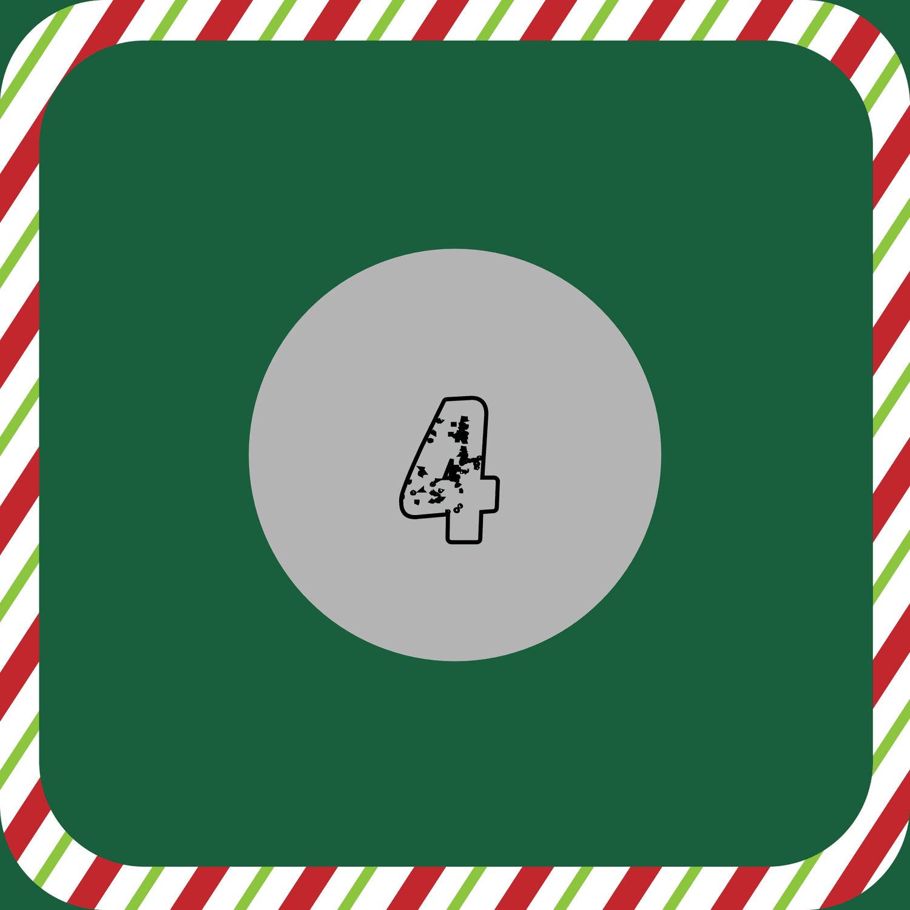

I dagens version bekantar vi oss med ett högaktuellt teleskopord som leder funktionsjackorna hela vägen ut i Norrlands vidsträckta landskap. Vi lyssnar på en intim kyrkoversion som inte lämnar någon kall, en trygg version i en föränderlig värld.
Kommentit / Kommentarer (1)
<p>I min värld dök Molly Hammar upp ungefär samtidigt som Molly Sanden och jag blandade ett tag ihop dem. Sedan deltog Molly Hammar i TV4 programmet "så mycket bättre" och nu när jag hör henne inser jag att hon sjunger väldigt bra. </p>